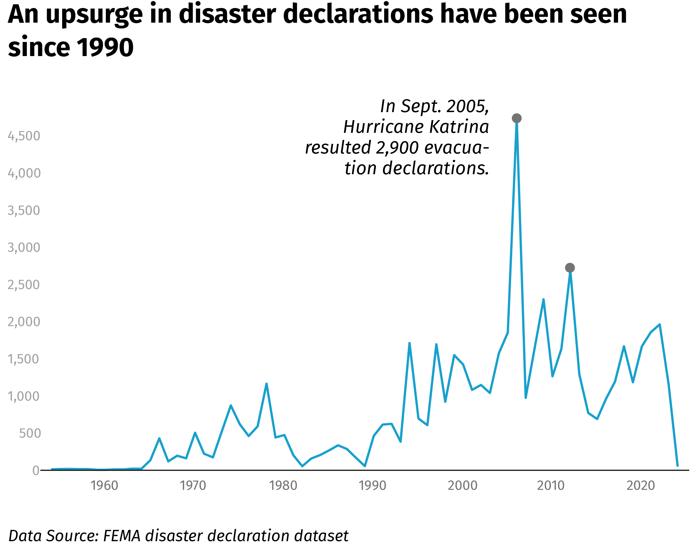

DISASTER DECLARATION
Jan 17, 2023
This is a choropleth map containing both state and county level disaster declaration data. The color represent different types of main disasters. You can zoom in to see each county's info. If you click each state/county, you can see the main type and the number of historical declaration in detail.
This map can give readers a sense of what major type of disaster in the area they are living in.
This is a line chart showing the trend of declared disaster. The COVID-19 declarations have been removed from the list.
